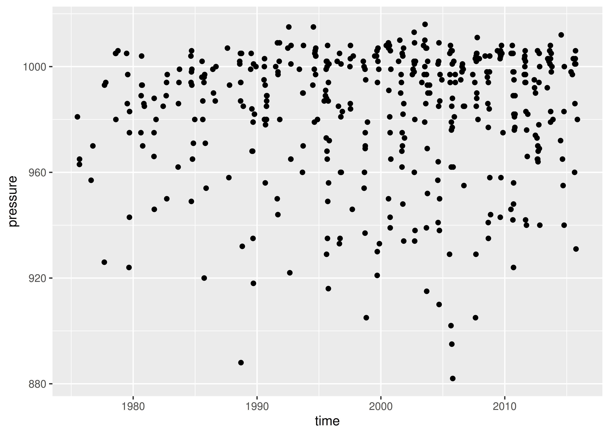
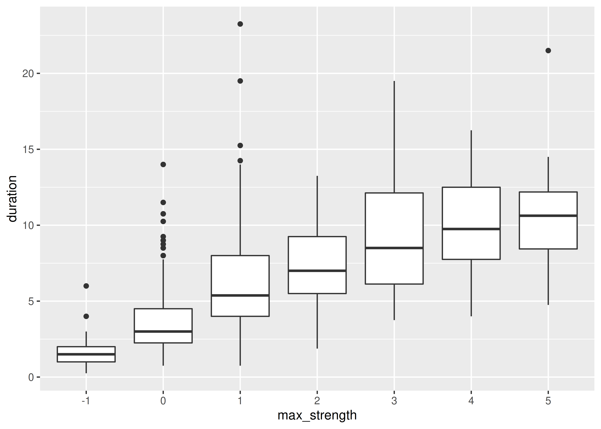
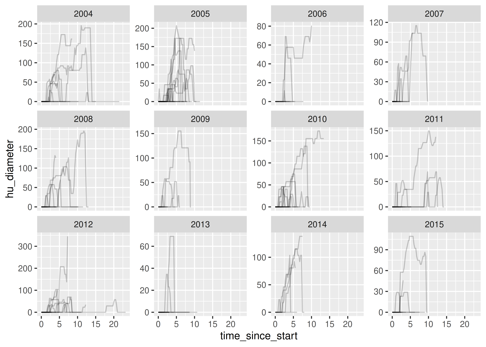
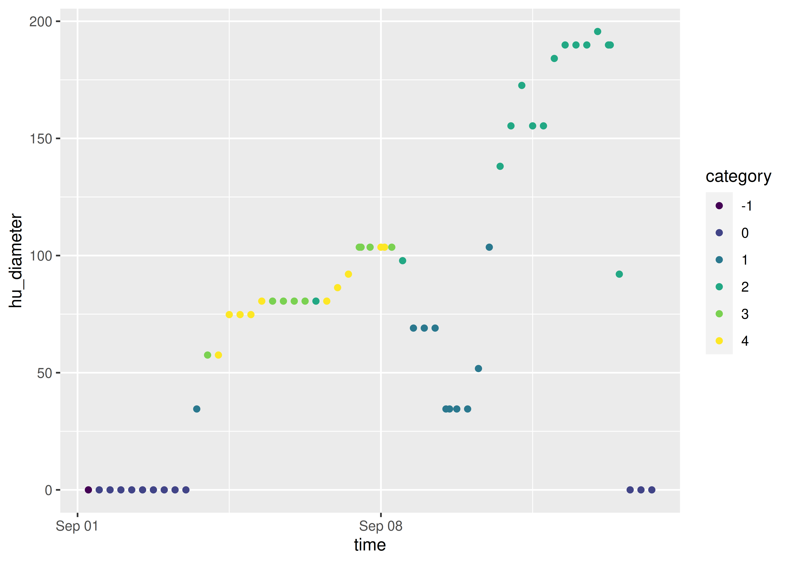

Module 5 Manipulating Data
In this section, we’re going start learning how to work with data. Generally speaking, data doesn’t come in a form suitable for analysis19 - you have to clean it up, create the variables you care about, get rid of those you don’t care about, and so on.
In R, we’ll be using the tidyverse for this. It’s a meta-package (a package that just loads other packages) that collects packages designed with the same philosophy20 and interface (basically, the commands will use predictable argument names and structure). You’ve already been introduced to the tidyverse - specifically, readr.
In SAS, there is no tidyverse, but there is a relatively consistent structure for how to accomplish each task. Most data cleaning in SAS is accomplished in data steps. In the interests of not confusing terms too much between languages, I’m going to use the tidyverse “verbs” to describe operations in both SAS and R.
dplyr (one of the packages in the tidyverse) creates a “grammar of data manipulation” to make it easier to describe different operations. I find the dplyr grammar to be extremely useful when talking about data operations, so I’m going to attempt to show you how to do the same operations in R with dplyr, and in SAS (without the underlying framework). Each verb describes a common task when doing both exploratory data analysis and more formal statistical modeling. In all tidyverse functions, data comes first – literally, as it’s the first argument to any function. In addition, you don’t use df$variable to access a variable - you refer to the variable by its name alone. This makes the syntax much cleaner and easier to read, which is another principle of the tidy philosophy.
Manipulating Data: Module Objectives
- Filter, subset, and clean data to prepare a dataset for analysis
- Describe and document operations performed on a data set transparently, and implement the operations using reproducible steps.
- Create summaries of data appropriate for additional analysis or display
5.1 Tidy Data
There are infinitely many ways to configure “messy” data, but data that is “tidy” has 3 attributes:
- Each variable has its own column
- Each observation has its own row
- Each value has its own cell
These attributes aren’t sufficient to define “clean” data, but they work to define “tidy” data (in the same way that you can have a “tidy” room because all of your dirty clothes are folded, but they aren’t clean just because they’re folded).
We’ll get more into how to work with different “messy” data configurations in the next module, but it’s worth keeping rules 1 and 3 in mind while working through this module.
5.2 Filter: Pick cases (rows) based on their values
Filter allows us to work with a subset of a larger data frame, keeping only the rows we’re interested in. We provide one or more logical conditions, and only those rows which meet the logical conditions are returned from filter(). Note that unless we store the result from filter() in the original object, we don’t change the original.

dplyr filter() by Allison Horst
starwars dataset, which contains a comprehensive list of the characters in the Star Wars movies.
Data set up
This data set is included in the dplyr package, so we load that package and then use the data() function to load dataset into memory. The loading isn’t complete until we actually use the dataset though… so let’s print the first few rows.
library(dplyr)
data(starwars)
starwars
# A tibble: 87 x 14
name height mass hair_color skin_color eye_color birth_year sex gender
<chr> <int> <dbl> <chr> <chr> <chr> <dbl> <chr> <chr>
1 Luke S… 172 77 blond fair blue 19 male mascu…
2 C-3PO 167 75 <NA> gold yellow 112 none mascu…
3 R2-D2 96 32 <NA> white, bl… red 33 none mascu…
4 Darth … 202 136 none white yellow 41.9 male mascu…
5 Leia O… 150 49 brown light brown 19 fema… femin…
6 Owen L… 178 120 brown, grey light blue 52 male mascu…
7 Beru W… 165 75 brown light blue 47 fema… femin…
8 R5-D4 97 32 <NA> white, red red NA none mascu…
9 Biggs … 183 84 black light brown 24 male mascu…
10 Obi-Wa… 182 77 auburn, wh… fair blue-gray 57 male mascu…
# … with 77 more rows, and 5 more variables: homeworld <chr>, species <chr>,
# films <list>, vehicles <list>, starships <list>In the interests of demonstrating the process on the same data, I’ve exported the starwars data to a CSV file using the readr package.
I had to remove the list-columns (films, vehicles, starships) because that format isn’t supported by SAS. You can access the csv data here. Note that I exported the data using ‘.’ as the NA/missing character so that it will be easy to read into SAS.
library(readr)
## write_csv(starwars[,1:11], "data/starwars.csv", na = '.')Let’s set that data up first:
6 libname classdat "sas/";
NOTE: Libref CLASSDAT was successfully assigned as follows:
Engine: V9
Physical Name:
/home/susan/Projects/Class/unl-stat850/stat850-textbook/sas
7 filename swdat "data/starwars.csv";
8
NOTE: PROCEDURE IMPORT used (Total process time):
real time 0.00 seconds
cpu time 0.00 seconds
NOTE: The SAS System stopped processing this step because of errors.
9 PROC IMPORT DATAFILE = swdat OUT = classdat.starwars
10 DBMS = CSV
11 REPLACE;
12 GETNAMES = YES;
13 RUN;
14
15 PROC PRINT DATA=classdat.starwars (obs=10);
16 RUN;
NOTE: PROCEDURE PRINT used (Total process time):
real time 0.00 seconds
cpu time 0.00 seconds
ERROR: Errors printed on pages 4,5,7,11,12,13.Once the data is set up, using filter is actually very simple.
Demonstration of filter() in R
# Get only the people
filter(starwars, species == "Human")
# A tibble: 35 x 14
name height mass hair_color skin_color eye_color birth_year sex gender
<chr> <int> <dbl> <chr> <chr> <chr> <dbl> <chr> <chr>
1 Luke S… 172 77 blond fair blue 19 male mascu…
2 Darth … 202 136 none white yellow 41.9 male mascu…
3 Leia O… 150 49 brown light brown 19 fema… femin…
4 Owen L… 178 120 brown, grey light blue 52 male mascu…
5 Beru W… 165 75 brown light blue 47 fema… femin…
6 Biggs … 183 84 black light brown 24 male mascu…
7 Obi-Wa… 182 77 auburn, wh… fair blue-gray 57 male mascu…
8 Anakin… 188 84 blond fair blue 41.9 male mascu…
9 Wilhuf… 180 NA auburn, gr… fair blue 64 male mascu…
10 Han So… 180 80 brown fair brown 29 male mascu…
# … with 25 more rows, and 5 more variables: homeworld <chr>, species <chr>,
# films <list>, vehicles <list>, starships <list>
# Get only the people who come from Tatooine
filter(starwars, species == "Human", homeworld == "Tatooine")
# A tibble: 8 x 14
name height mass hair_color skin_color eye_color birth_year sex gender
<chr> <int> <dbl> <chr> <chr> <chr> <dbl> <chr> <chr>
1 Luke Sk… 172 77 blond fair blue 19 male mascu…
2 Darth V… 202 136 none white yellow 41.9 male mascu…
3 Owen La… 178 120 brown, grey light blue 52 male mascu…
4 Beru Wh… 165 75 brown light blue 47 fema… femin…
5 Biggs D… 183 84 black light brown 24 male mascu…
6 Anakin … 188 84 blond fair blue 41.9 male mascu…
7 Shmi Sk… 163 NA black fair brown 72 fema… femin…
8 Cliegg … 183 NA brown fair blue 82 male mascu…
# … with 5 more variables: homeworld <chr>, species <chr>, films <list>,
# vehicles <list>, starships <list>filter() operation is accomplished using a where clause. Multiple clauses can be connected using and, and compound statements can be grouped with parentheses.
Demonstration of where in SAS
Rather than output the whole data table (which would take up a lot of space), I’ve linked the log file from each chunk below the chunk. If you are running this code in SAS, you should NOT copy the proc printto line.
6 libname classdat "sas/";
NOTE: Libref CLASSDAT was successfully assigned as follows:
Engine: V9
Physical Name:
/home/susan/Projects/Class/unl-stat850/stat850-textbook/sas
7
8 /* SAS limits dataset names to 8 characters, which is super
8 ! annoying. */
9 /* Sorry the names aren't descriptive... */
10
11 DATA tmp1; /* this is the out dataset */
12 /* By not having a library attached, SAS places this in WORK */
13 /* It's a temporary dataset */
14 set classdat.starwars;
15 where (species = 'Human');
16 run;
NOTE: The data set WORK.TMP1 has 0 observations and 11 variables.
NOTE: DATA statement used (Total process time):
real time 0.00 seconds
cpu time 0.00 seconds
ERROR: Errors printed on pages 4,5,7,11,12,13.See the log file here
6 libname classdat "sas/";
NOTE: Libref CLASSDAT was successfully assigned as follows:
Engine: V9
Physical Name:
/home/susan/Projects/Class/unl-stat850/stat850-textbook/sas
7
8 DATA tmp2;
9 set classdat.starwars;
10 where (species = 'Human') and (homeworld = 'Tatooine');
11 run;
NOTE: The data set WORK.TMP2 has 0 observations and 11 variables.
NOTE: DATA statement used (Total process time):
real time 0.00 seconds
cpu time 0.00 seconds
ERROR: Errors printed on pages 4,5,7,11,12,13.At this point, you’ve seen the traditional SAS Data step options, but there is another SAS PROC that may be more useful (and more similar to dplyr). dplyr was developed to provide SQL-like syntax while enabling the use of more advanced computations than are supported in SQL. While SAS doesn’t have anything quite the same as dplyr, it does have PROC SQL.
SAS PROC SQL
In SQL, as in the SAS DATA step, filter() operations are performed using the keyword WHERE.
To limit the output I’m going to cheat a bit and use SELECT statements before I officially teach them to you - this is mostly so you don’t get a table with all 49 variables in it. Similarly, I’m limiting the dataset to the first 5 observations that meet the condition so that we don’t have to see all the water type pokemon.
6 libname classdat "sas/";
NOTE: Libref CLASSDAT was successfully assigned as follows:
Engine: V9
Physical Name:
/home/susan/Projects/Class/unl-stat850/stat850-textbook/sas
7
8 PROC SQL;
NOTE: PROC SQL set option NOEXEC and will continue to check the syntax of
statements.
9 SELECT pokedex_number, name, type_1, type_number FROM
9 ! classdat.poke (obs=5)
10 WHERE type_1 = "Water";
NOTE: Statement not executed due to NOEXEC option.
NOTE: The SAS System stopped processing this step because of errors.
NOTE: PROCEDURE SQL used (Total process time):
real time 0.00 seconds
cpu time 0.00 seconds
ERROR: Errors printed on pages 4,5,7,11,12,13.If we want to store the output of our query to a new table, we can do that by starting our query with CREATE TABLE <table name> AS - this creates a table with our results.
6 libname classdat "sas/";
NOTE: Libref CLASSDAT was successfully assigned as follows:
Engine: V9
Physical Name:
/home/susan/Projects/Class/unl-stat850/stat850-textbook/sas
7
NOTE: The SAS System stopped processing this step because of errors.
NOTE: PROCEDURE SQL used (Total process time):
real time 0.01 seconds
cpu time 0.01 seconds
8 PROC SQL;
NOTE: PROC SQL set option NOEXEC and will continue to check the syntax of
statements.
9 CREATE TABLE aquapoke AS
10 SELECT pokedex_number, name, type_1, type_2, type_number FROM
10 ! classdat.poke
11 WHERE (type_1 = "Water" OR type_2 = "Water");
NOTE: Statement not executed due to NOEXEC option.
12
NOTE: The SAS System stopped processing this step because of errors.
NOTE: PROCEDURE SQL used (Total process time):
real time 0.00 seconds
cpu time 0.00 seconds
13 PROC PRINT DATA=aquapoke (obs=10);
ERROR: File WORK.AQUAPOKE.DATA does not exist.
14 RUN;
NOTE: The SAS System stopped processing this step because of errors.
NOTE: PROCEDURE PRINT used (Total process time):
real time 0.00 seconds
cpu time 0.00 seconds
ERROR: Errors printed on pages 4,5,7,11,12,13,14.5.2.1 Common Filter() Tasks
In dplyr, there are a few helper functions which may be useful when constructing filter statements.
row_number() - this is only used inside of another dplyr function (e.g. filter). You might want to keep only even rows, or only the first 10 rows in a table.
filter(poke, (row_number() %% 2 == 0))
Error in filter(poke, (row_number()%%2 == 0)): object 'poke' not found
# There are several pokemon who have multiple entries in the table,
# so the pokedex_number doesn't line up with the row number.
arrange() - sort rows in the table by one or more variables
arrange(poke, desc(total_points))
Error in arrange(poke, desc(total_points)): object 'poke' not found
slice_max() - this will keep the top values of a specified variable.
It’s like a filter statement, but it’s a shortcut built to handle a common task. You could write a filter statement that would do this, but it would take a lot more code.
slice_max(poke, order_by = total_points, n = 5) %>%
arrange(desc(total_points)) # Sort decreasing
Error in slice_max(poke, order_by = total_points, n = 5): object 'poke' not foundBy default, slice_max() returns values tied with the nth value as well, which is why our result has 6 rows.
slice_max(poke, order_by = total_points, n = 5, with_ties = F) %>%
arrange(desc(total_points)) # Sort decreasing
Error in slice_max(poke, order_by = total_points, n = 5, with_ties = F): object 'poke' not foundIn SAS, these same tasks can sometimes require a bit more code.
Keeping only certain rows in SAS
In SAS, to use a variable, you have to define it in one data step, then make another data step in order to use that variable. But, like dplyr, SAS has a row number counter that we can use for this purpose.
6 libname classdat "sas/";
NOTE: Libref CLASSDAT was successfully assigned as follows:
Engine: V9
Physical Name:
/home/susan/Projects/Class/unl-stat850/stat850-textbook/sas
7
8 DATA tmp;
9 SET classdat.poke;
10 rownum=_n_; /* SAS shorthand for row number */
11 RUN;
NOTE: The data set WORK.TMP has 0 observations and 50 variables.
WARNING: Data set WORK.TMP was not replaced because this step was stopped.
NOTE: DATA statement used (Total process time):
real time 0.00 seconds
cpu time 0.00 seconds
12
13 DATA evenrow;
14 SET WORK.tmp;
15 WHERE MOD(rownum, 2) = 0;
ERROR: Variable rownum is not on file WORK.TMP.
16 DROP rownum; /* ditch temp variable */
17 RUN;
WARNING: The variable rownum in the DROP, KEEP, or RENAME list has never
been referenced.
NOTE: The SAS System stopped processing this step because of errors.
WARNING: The data set WORK.EVENROW may be incomplete. When this step was
stopped there were 0 observations and 1 variables.
NOTE: DATA statement used (Total process time):
real time 0.00 seconds
cpu time 0.00 seconds
ERROR: Errors printed on pages 4,5,7,11,12,13,15.Top N values
We’re going to want to use PROC SORT to get the data arranged before we take the top N values.
According to this, we can’t use _n_ in a where statement, and the proposed solution isn’t reliable. So we’ll do it the long way.
6 libname classdat "sas/";
NOTE: Libref CLASSDAT was successfully assigned as follows:
Engine: V9
Physical Name:
/home/susan/Projects/Class/unl-stat850/stat850-textbook/sas
7
8 PROC SORT DATA = classdat.poke
9 OUT = pokesort;
10 BY descending total_points;
11 RUN;
NOTE: The data set WORK.POKESORT has 0 observations and 0 variables.
NOTE: PROCEDURE SORT used (Total process time):
real time 0.00 seconds
cpu time 0.00 seconds
12
13 DATA poken;
14 SET WORK.pokesort;
15 rownum = _n_;
16 RUN;
NOTE: The data set WORK.POKEN has 0 observations and 1 variables.
NOTE: DATA statement used (Total process time):
real time 0.00 seconds
cpu time 0.00 seconds
17
18 DATA poken;
19 SET WORK.poken;
20 WHERE rownum <= 5;
21 DROP rownum;
22 RUN;
NOTE: The data set WORK.POKEN has 0 observations and 0 variables.
WARNING: Data set WORK.POKEN was not replaced because this step was
stopped.
NOTE: DATA statement used (Total process time):
real time 0.00 seconds
cpu time 0.00 seconds
23
24 PROC PRINT DATA = poken;
25 VAR pokedex_number name status species type_1 total_points;
ERROR: Variable POKEDEX_NUMBER not found.
ERROR: Variable NAME not found.
ERROR: Variable STATUS not found.
ERROR: Variable SPECIES not found.
ERROR: Variable TYPE_1 not found.
ERROR: Variable TOTAL_POINTS not found.
26 RUN;
NOTE: The SAS System stopped processing this step because of errors.
NOTE: PROCEDURE PRINT used (Total process time):
real time 0.00 seconds
cpu time 0.00 seconds
ERROR: Errors printed on pages 4,5,7,11,12,13,15.In both cases, the SAS statements required to perform the task require a WHERE clause, but also a few other statements to get things working. The equivalent base R code would be about the same (though tricky in different spots).
The thing that makes the tidyverse philosophy so addictive is that it makes these common, everyday tasks both easy and concise (that is, few lines of code are required).
PROC SQL filter statements
SQL doesn’t have an intrinsic notion of ordered rows, so in order to select even rows, we need to create a temporary dataset with _n_ copied into a variable (just like last time).
6 libname classdat "sas/";
NOTE: Libref CLASSDAT was successfully assigned as follows:
Engine: V9
Physical Name:
/home/susan/Projects/Class/unl-stat850/stat850-textbook/sas
7
8 DATA poke;
9 SET classdat.poke;
10 rownum=_n_;
11 RUN;
NOTE: The data set WORK.POKE has 0 observations and 50 variables.
NOTE: DATA statement used (Total process time):
real time 0.00 seconds
cpu time 0.00 seconds
12
13 PROC SQL;
NOTE: PROC SQL set option NOEXEC and will continue to check the syntax of
statements.
14 SELECT * FROM poke(obs=5)
15 WHERE mod(rownum, 2) = 0;
NOTE: Statement not executed due to NOEXEC option.
NOTE: The SAS System stopped processing this step because of errors.
NOTE: PROCEDURE SQL used (Total process time):
real time 0.00 seconds
cpu time 0.00 seconds
ERROR: Errors printed on pages 4,5,7,11,12,13,15,16.SELECT * says to select all variables. We’ll talk about SELECT in the next section, but with SQL it’s not reqlly possible to avoid using SELECT.
If we want the 5 pokemon with the highest total points, we can use ORDER BY to sort the table, and then specify that we only want 5 rows.
6 libname classdat "sas/";
NOTE: Libref CLASSDAT was successfully assigned as follows:
Engine: V9
Physical Name:
/home/susan/Projects/Class/unl-stat850/stat850-textbook/sas
7
8 PROC SQL;
NOTE: PROC SQL set option NOEXEC and will continue to check the syntax of
statements.
9 SELECT pokedex_number, name, status, species, type_1,
9 ! total_points
10 FROM classdat.poke(obs=5)
11 ORDER BY total_points DESC;
NOTE: Data file CLASSDAT.POKE.DATA is in a format that is native to
another host, or the file encoding does not match the session
encoding. Cross Environment Data Access will be used, which might
require additional CPU resources and might reduce performance.
NOTE: Statement not executed due to NOEXEC option.
NOTE: The SAS System stopped processing this step because of errors.
NOTE: PROCEDURE SQL used (Total process time):
real time 0.00 seconds
cpu time 0.00 seconds
ERROR: Errors printed on pages 5,7,12.As a reminder, if we want to store this new data into a new dataset, we have to start our statement with CREATE TABLE
6 libname classdat "sas/";
NOTE: Libref CLASSDAT was successfully assigned as follows:
Engine: V9
Physical Name:
/home/susan/Projects/Class/unl-stat850/stat850-textbook/sas
7
NOTE: The SAS System stopped processing this step because of errors.
NOTE: PROCEDURE SQL used (Total process time):
real time 0.01 seconds
cpu time 0.01 seconds
8 PROC SQL;
NOTE: PROC SQL set option NOEXEC and will continue to check the syntax of
statements.
9 CREATE TABLE poketmp AS
10 SELECT pokedex_number, name, status, species, type_1,
10 ! total_points
11 FROM classdat.poke(obs=5)
12 ORDER BY total_points DESC;
NOTE: Statement not executed due to NOEXEC option.
13
NOTE: The SAS System stopped processing this step because of errors.
NOTE: PROCEDURE SQL used (Total process time):
real time 0.00 seconds
cpu time 0.00 seconds
14 PROC PRINT DATA=poketmp;
ERROR: File WORK.POKETMP.DATA does not exist.
15 RUN;
NOTE: The SAS System stopped processing this step because of errors.
NOTE: PROCEDURE PRINT used (Total process time):
real time 0.00 seconds
cpu time 0.00 seconds
ERROR: Errors printed on pages 5,7,12.Try it out
Using the pokemon data, can you create a new data set or data frame (SAS and R, respectively) that has only water type pokemon? Can you write a filter statement that looks for any pokemon which has water type for either type1 or type2?
R
poke <- read_csv("data/pokemon_ascii.csv")
Warning: 1 parsing failure.
row col expected actual file
1028 weight_kg a double . 'data/pokemon_ascii.csv'
filter(poke, type_1 == "Water")
# A tibble: 134 x 49
pokedex_number name german_name generation status species type_number type_1
<dbl> <chr> <chr> <dbl> <chr> <chr> <dbl> <chr>
1 7 Squi… Schiggy 1 Normal Tiny T… 1 Water
2 8 Wart… Schillok 1 Normal Turtle… 1 Water
3 9 Blas… Turtok 1 Normal Shellf… 1 Water
4 9 Mega… Turtok 1 Normal Shellf… 1 Water
5 54 Psyd… Enton 1 Normal Duck P… 1 Water
6 55 Gold… Entoron 1 Normal Duck P… 1 Water
7 60 Poli… Quapsel 1 Normal Tadpol… 1 Water
8 61 Poli… Quaputzi 1 Normal Tadpol… 1 Water
9 62 Poli… Quappo 1 Normal Tadpol… 2 Water
10 72 Tent… Tentacha 1 Normal Jellyf… 2 Water
# … with 124 more rows, and 41 more variables: type_2 <chr>, height_m <dbl>,
# weight_kg <dbl>, abilities_number <dbl>, ability_1 <chr>, ability_2 <chr>,
# ability_hidden <chr>, total_points <dbl>, hp <dbl>, attack <dbl>,
# defense <dbl>, sp_attack <dbl>, sp_defense <dbl>, speed <dbl>,
# catch_rate <chr>, base_friendship <chr>, base_experience <chr>,
# growth_rate <chr>, egg_type_number <dbl>, egg_type_1 <chr>,
# egg_type_2 <chr>, percentage_male <chr>, egg_cycles <chr>,
# against_normal <dbl>, against_fire <dbl>, against_water <dbl>,
# against_electric <dbl>, against_grass <dbl>, against_ice <dbl>,
# against_fight <dbl>, against_poison <dbl>, against_ground <dbl>,
# against_flying <dbl>, against_psychic <dbl>, against_bug <dbl>,
# against_rock <dbl>, against_ghost <dbl>, against_dragon <dbl>,
# against_dark <dbl>, against_steel <dbl>, against_fairy <dbl>
filter(poke, type_1 == "Water" | type_2 == "Water")
# A tibble: 153 x 49
pokedex_number name german_name generation status species type_number type_1
<dbl> <chr> <chr> <dbl> <chr> <chr> <dbl> <chr>
1 7 Squi… Schiggy 1 Normal Tiny T… 1 Water
2 8 Wart… Schillok 1 Normal Turtle… 1 Water
3 9 Blas… Turtok 1 Normal Shellf… 1 Water
4 9 Mega… Turtok 1 Normal Shellf… 1 Water
5 54 Psyd… Enton 1 Normal Duck P… 1 Water
6 55 Gold… Entoron 1 Normal Duck P… 1 Water
7 60 Poli… Quapsel 1 Normal Tadpol… 1 Water
8 61 Poli… Quaputzi 1 Normal Tadpol… 1 Water
9 62 Poli… Quappo 1 Normal Tadpol… 2 Water
10 72 Tent… Tentacha 1 Normal Jellyf… 2 Water
# … with 143 more rows, and 41 more variables: type_2 <chr>, height_m <dbl>,
# weight_kg <dbl>, abilities_number <dbl>, ability_1 <chr>, ability_2 <chr>,
# ability_hidden <chr>, total_points <dbl>, hp <dbl>, attack <dbl>,
# defense <dbl>, sp_attack <dbl>, sp_defense <dbl>, speed <dbl>,
# catch_rate <chr>, base_friendship <chr>, base_experience <chr>,
# growth_rate <chr>, egg_type_number <dbl>, egg_type_1 <chr>,
# egg_type_2 <chr>, percentage_male <chr>, egg_cycles <chr>,
# against_normal <dbl>, against_fire <dbl>, against_water <dbl>,
# against_electric <dbl>, against_grass <dbl>, against_ice <dbl>,
# against_fight <dbl>, against_poison <dbl>, against_ground <dbl>,
# against_flying <dbl>, against_psychic <dbl>, against_bug <dbl>,
# against_rock <dbl>, against_ghost <dbl>, against_dragon <dbl>,
# against_dark <dbl>, against_steel <dbl>, against_fairy <dbl>
# The conditions have to be separated by |, which means "or"SAS DATA Step
6 libname classdat "sas/";
NOTE: Libref CLASSDAT was successfully assigned as follows:
Engine: V9
Physical Name:
/home/susan/Projects/Class/unl-stat850/stat850-textbook/sas
7
8 DATA water1;
9 SET classdat.poke;
10 WHERE type_1 = "Water";
11 RUN;
NOTE: The data set WORK.WATER1 has 0 observations and 49 variables.
NOTE: DATA statement used (Total process time):
real time 0.00 seconds
cpu time 0.00 seconds
12
13 DATA water2;
14 SET classdat.poke;
15 WHERE (type_1 = "Water" OR type_2 = "Water");
16 RUN;
NOTE: The data set WORK.WATER2 has 0 observations and 49 variables.
NOTE: DATA statement used (Total process time):
real time 0.00 seconds
cpu time 0.00 seconds
ERROR: Errors printed on pages 5,7,12,13.In the interests of only showing the parts of the log that are useful, I’ve just pasted them into this chunk. Not reproducible, but faster to read.
NOTE: There were 134 observations read from the data set CLASSDAT.POKE.
WHERE type_1='Water';
NOTE: The data set WORK.WATER1 has 134 observations and 49 variables.
NOTE: DATA statement used (Total process time):
real time 0.00 seconds
cpu time 0.00 seconds
NOTE: There were 153 observations read from the data set CLASSDAT.POKE.
WHERE (type_1='Water') or (type_2='Water');
NOTE: The data set WORK.WATER2 has 153 observations and 49 variables.
NOTE: DATA statement used (Total process time):
real time 0.00 seconds
cpu time 0.00 seconds5.3 Select: Pick columns
Sometimes, we don’t want to work with a set of 50 variables when we’re only interested in 5. When that happens, we might be able to pick the variables we want by index (e.g. df[, c(1, 3, 5)], or VAR statements, but that can get tedious).
In dplyr, the function to pick a few columns is select(). The syntax from the help file (?select) looks deceptively simple.
select(.data, …)
So as with just about every other tidyverse function, the first argument in a select statement is the data. After that, though, you can put just about anything that R can interpret. ... means something along the lines of “put in any additional arguments that make sense in context or might be passed on to other functions.”
So what can go in there?
An exhaustive list of ways to select variables in dplyr
First, dplyr aims to work with standard R syntax, making it intuitive (and also, making it work with variable names instead of just variable indices).21 Most dplyr commands work with “bare” variable names - you don’t need to put the variable name in quotes to reference it. There are a few exceptions to this rule, but they’re very explicitly exceptions.
var3:var5:select(df, var3:var5)will give you a data frame with columns var3, anything between var3 and var 5, and var5!(<set of variables>)will give you any columns that aren’t in the set of variables in parentheses(<set of vars 1>) & (<set of vars 2>)will give you any variables that are in both set 1 and set 2.(<set of vars 1>) | (<set of vars 2>)will give you any variables that are in either set 1 or set 2.c()combines sets of variables.
dplyr also defines a lot of variable selection “helpers” that can be used inside select() statements. These statements work with bare column names (so you don’t have to put quotes around the column names when you use them).
everything()matches all variableslast_col()matches the last variable.last_col(offset = n)selects the n-th to last variable.starts_with("xyz")will match any columns with names that start with xyz. Similarly,ends_with()does exactly what you’d expect as well.contains("xyz")will match any columns with names containing the literal string “xyz.” Note,containsdoes not work with regular expressions (you don’t need to know what that means right now).matches(regex)takes a regular expression as an argument and returns all columns matching that expression.num_range(prefix, range)selects any columns that start with prefix and have numbers matching the provided numerical range.
There are also selectors that deal with character vectors. These can be useful if you have a list of important variables and want to just keep those variables.
all_of(char)matches all variable names in the character vectorchar. If one of the variables doesn’t exist, this will return an error.any_of(char)matches the contents of the character vectorchar, but does not throw an error if the variable doesn’t exist in the data set.
There’s one final selector -
where()applies a function to each variable and selects those for which the function returns TRUE. This provides a lot of flexibility and opportunity to be creative (but I’ve never actually needed to use it).
Let’s try these selector functions out and see what we can accomplish!
if (!"nycflights13" %in% installed.packages()) install.packages("nycflights13")
library(nycflights13)
data(flights)
str(flights)
tibble[,19] [336,776 × 19] (S3: tbl_df/tbl/data.frame)
$ year : int [1:336776] 2013 2013 2013 2013 2013 2013 2013 2013 2013 2013 ...
$ month : int [1:336776] 1 1 1 1 1 1 1 1 1 1 ...
$ day : int [1:336776] 1 1 1 1 1 1 1 1 1 1 ...
$ dep_time : int [1:336776] 517 533 542 544 554 554 555 557 557 558 ...
$ sched_dep_time: int [1:336776] 515 529 540 545 600 558 600 600 600 600 ...
$ dep_delay : num [1:336776] 2 4 2 -1 -6 -4 -5 -3 -3 -2 ...
$ arr_time : int [1:336776] 830 850 923 1004 812 740 913 709 838 753 ...
$ sched_arr_time: int [1:336776] 819 830 850 1022 837 728 854 723 846 745 ...
$ arr_delay : num [1:336776] 11 20 33 -18 -25 12 19 -14 -8 8 ...
$ carrier : chr [1:336776] "UA" "UA" "AA" "B6" ...
$ flight : int [1:336776] 1545 1714 1141 725 461 1696 507 5708 79 301 ...
$ tailnum : chr [1:336776] "N14228" "N24211" "N619AA" "N804JB" ...
$ origin : chr [1:336776] "EWR" "LGA" "JFK" "JFK" ...
$ dest : chr [1:336776] "IAH" "IAH" "MIA" "BQN" ...
$ air_time : num [1:336776] 227 227 160 183 116 150 158 53 140 138 ...
$ distance : num [1:336776] 1400 1416 1089 1576 762 ...
$ hour : num [1:336776] 5 5 5 5 6 5 6 6 6 6 ...
$ minute : num [1:336776] 15 29 40 45 0 58 0 0 0 0 ...
$ time_hour : POSIXct[1:336776], format: "2013-01-01 05:00:00" "2013-01-01 05:00:00" ...We’ll start out with the nycflights13 package, which contains information on all flights that left a NYC airport to destinations in the US, Puerto Rico, and the US Virgin Islands.
You might want to try out your EDA skills from the previous module to see what you can find out about the dataset, before seeing how select() works.
We could get a data frame of departure information for each flight:
select(flights, flight, year:day, tailnum, origin, matches("dep"))
# A tibble: 336,776 x 9
flight year month day tailnum origin dep_time sched_dep_time dep_delay
<int> <int> <int> <int> <chr> <chr> <int> <int> <dbl>
1 1545 2013 1 1 N14228 EWR 517 515 2
2 1714 2013 1 1 N24211 LGA 533 529 4
3 1141 2013 1 1 N619AA JFK 542 540 2
4 725 2013 1 1 N804JB JFK 544 545 -1
5 461 2013 1 1 N668DN LGA 554 600 -6
6 1696 2013 1 1 N39463 EWR 554 558 -4
7 507 2013 1 1 N516JB EWR 555 600 -5
8 5708 2013 1 1 N829AS LGA 557 600 -3
9 79 2013 1 1 N593JB JFK 557 600 -3
10 301 2013 1 1 N3ALAA LGA 558 600 -2
# … with 336,766 more rowsPerhaps we want the plane and flight ID information to be the first columns:
flights %>%
select(carrier:dest, everything())
# A tibble: 336,776 x 19
carrier flight tailnum origin dest year month day dep_time sched_dep_time
<chr> <int> <chr> <chr> <chr> <int> <int> <int> <int> <int>
1 UA 1545 N14228 EWR IAH 2013 1 1 517 515
2 UA 1714 N24211 LGA IAH 2013 1 1 533 529
3 AA 1141 N619AA JFK MIA 2013 1 1 542 540
4 B6 725 N804JB JFK BQN 2013 1 1 544 545
5 DL 461 N668DN LGA ATL 2013 1 1 554 600
6 UA 1696 N39463 EWR ORD 2013 1 1 554 558
7 B6 507 N516JB EWR FLL 2013 1 1 555 600
8 EV 5708 N829AS LGA IAD 2013 1 1 557 600
9 B6 79 N593JB JFK MCO 2013 1 1 557 600
10 AA 301 N3ALAA LGA ORD 2013 1 1 558 600
# … with 336,766 more rows, and 9 more variables: dep_delay <dbl>,
# arr_time <int>, sched_arr_time <int>, arr_delay <dbl>, air_time <dbl>,
# distance <dbl>, hour <dbl>, minute <dbl>, time_hour <dttm>Note that everything() won’t duplicate columns you’ve already added.
Exploring the difference between bare name selection and all_of()/any_of()
flights %>%
select(carrier, flight, tailnum, matches("time"))
# A tibble: 336,776 x 9
carrier flight tailnum dep_time sched_dep_time arr_time sched_arr_time
<chr> <int> <chr> <int> <int> <int> <int>
1 UA 1545 N14228 517 515 830 819
2 UA 1714 N24211 533 529 850 830
3 AA 1141 N619AA 542 540 923 850
4 B6 725 N804JB 544 545 1004 1022
5 DL 461 N668DN 554 600 812 837
6 UA 1696 N39463 554 558 740 728
7 B6 507 N516JB 555 600 913 854
8 EV 5708 N829AS 557 600 709 723
9 B6 79 N593JB 557 600 838 846
10 AA 301 N3ALAA 558 600 753 745
# … with 336,766 more rows, and 2 more variables: air_time <dbl>,
# time_hour <dttm>
varlist <- c("carrier", "flight", "tailnum",
"dep_time", "sched_dep_time", "arr_time", "sched_arr_time",
"air_time")
flights %>%
select(all_of(varlist))
# A tibble: 336,776 x 8
carrier flight tailnum dep_time sched_dep_time arr_time sched_arr_time
<chr> <int> <chr> <int> <int> <int> <int>
1 UA 1545 N14228 517 515 830 819
2 UA 1714 N24211 533 529 850 830
3 AA 1141 N619AA 542 540 923 850
4 B6 725 N804JB 544 545 1004 1022
5 DL 461 N668DN 554 600 812 837
6 UA 1696 N39463 554 558 740 728
7 B6 507 N516JB 555 600 913 854
8 EV 5708 N829AS 557 600 709 723
9 B6 79 N593JB 557 600 838 846
10 AA 301 N3ALAA 558 600 753 745
# … with 336,766 more rows, and 1 more variable: air_time <dbl>
varlist <- c(varlist, "whoops")
flights %>%
select(all_of(varlist)) # this errors out b/c whoops doesn't exist
Error: Can't subset columns that don't exist.
x Column `whoops` doesn't exist.
flights %>%
select(any_of(varlist)) # this runs just fine
# A tibble: 336,776 x 8
carrier flight tailnum dep_time sched_dep_time arr_time sched_arr_time
<chr> <int> <chr> <int> <int> <int> <int>
1 UA 1545 N14228 517 515 830 819
2 UA 1714 N24211 533 529 850 830
3 AA 1141 N619AA 542 540 923 850
4 B6 725 N804JB 544 545 1004 1022
5 DL 461 N668DN 554 600 812 837
6 UA 1696 N39463 554 558 740 728
7 B6 507 N516JB 555 600 913 854
8 EV 5708 N829AS 557 600 709 723
9 B6 79 N593JB 557 600 838 846
10 AA 301 N3ALAA 558 600 753 745
# … with 336,766 more rows, and 1 more variable: air_time <dbl>So for now, at least in R, you know how to cut your data down to size rowwise (with filter) and column-wise (with select).
Unfortunately, SAS doesn’t make column selection quite as easy. It’s still not hard, but it can be tedious. In SAS, there are two primary methods to select variables: KEEP selects variables, DROP removes variables.
# Export flights data for SAS
flights %>%
sample_frac(size = .25) %>% # Keep file from being too big
write_csv("data/flights.csv", na = ".")6 /* Read in data */
7 libname classdat "sas/";
NOTE: Libref CLASSDAT was successfully assigned as follows:
Engine: V9
Physical Name:
/home/susan/Projects/Class/unl-stat850/stat850-textbook/sas
8 filename fileloc
8 ! '~/Projects/Class/unl-stat850/2020-stat850/data/flights.csv';
NOTE: PROCEDURE IMPORT used (Total process time):
real time 0.00 seconds
cpu time 0.00 seconds
NOTE: The SAS System stopped processing this step because of errors.
9 PROC IMPORT datafile = fileloc out=classdat.flights
10 DBMS = csv; /* comma delimited file */
11 GETNAMES = YES;
12 RUN;
ERROR: Errors printed on pages 5,7,12,13.: serves as a wildcard.
Ranges of variables can be specified with two dashes, e.g. var3 -- var5.
SAS KEEP statement
Unfortunately, the wildcard doesn’t work on both ends, so to get the equivalent of matches("dep"), we have to use two different options in our KEEP statement (plus the extra variables that don’t have dep in them).
6 libname classdat "sas/";
NOTE: Libref CLASSDAT was successfully assigned as follows:
Engine: V9
Physical Name:
/home/susan/Projects/Class/unl-stat850/stat850-textbook/sas
7
8 DATA tmpfly;
9 KEEP flight year--day tailnum origin dep: sched_dep:;
10 SET classdat.flights;
11 RUN;
NOTE: The data set WORK.TMPFLY has 0 observations and 9 variables.
NOTE: DATA statement used (Total process time):
real time 0.00 seconds
cpu time 0.00 seconds
12
13 PROC PRINT DATA = tmpfly (obs=10);
14 RUN;
NOTE: PROCEDURE PRINT used (Total process time):
real time 0.00 seconds
cpu time 0.00 seconds
ERROR: Errors printed on pages 5,7,12,13.select() does.
If we’d prefer to carve out columns (rather than assembling a new dataset with the columns we want to keep), we can use a DROP statement, which works exactly the same way. Let’s see what columns we removed implicitly last time by dropping everything we’d previously kept:
SAS DROP statement
6 libname classdat "sas/";
NOTE: Libref CLASSDAT was successfully assigned as follows:
Engine: V9
Physical Name:
/home/susan/Projects/Class/unl-stat850/stat850-textbook/sas
7
8 DATA tmpfly;
9 DROP flight year--day tailnum origin dep: sched_dep:;
10 SET classdat.flights;
11 RUN;
NOTE: The data set WORK.TMPFLY has 0 observations and 10 variables.
WARNING: Data set WORK.TMPFLY was not replaced because this step was
stopped.
NOTE: DATA statement used (Total process time):
real time 0.00 seconds
cpu time 0.00 seconds
12
13 PROC PRINT DATA = tmpfly (obs=10);
14 RUN;
NOTE: PROCEDURE PRINT used (Total process time):
real time 0.00 seconds
cpu time 0.00 seconds
ERROR: Errors printed on pages 5,7,12,13.As with the filter statements, we can also use PROC SQL instead of a SAS DATA step. There are even ways to (sort-of) use elements of both.
SAS PROC SQL SELECT statement
6 libname classdat "sas/";
NOTE: Libref CLASSDAT was successfully assigned as follows:
Engine: V9
Physical Name:
/home/susan/Projects/Class/unl-stat850/stat850-textbook/sas
7
8 PROC SQL;
NOTE: PROC SQL set option NOEXEC and will continue to check the syntax of
statements.
9 CREATE TABLE tmpfly
10 AS
11 SELECT flight, year, month, day, tailnum, origin
12 FROM classdat.flights;
NOTE: Statement not executed due to NOEXEC option.
13
NOTE: The SAS System stopped processing this step because of errors.
NOTE: PROCEDURE SQL used (Total process time):
real time 0.00 seconds
cpu time 0.00 seconds
14 PROC PRINT DATA = tmpfly(obs=10);
15 RUN;
NOTE: PROCEDURE PRINT used (Total process time):
real time 0.00 seconds
cpu time 0.00 seconds
ERROR: Errors printed on pages 5,7,12,13.Note that PROC SQL doesn’t have a RUN statement - it is executed immediately. But, using the PROC SQL syntax, we still have to list out all of the variables, and that’s a drag.
Luckily, PROC SQL will also let us use some of the DATA step options, if we’re careful about it:
6 libname classdat "sas/";
NOTE: Libref CLASSDAT was successfully assigned as follows:
Engine: V9
Physical Name:
/home/susan/Projects/Class/unl-stat850/stat850-textbook/sas
7
8 PROC SQL;
NOTE: PROC SQL set option NOEXEC and will continue to check the syntax of
statements.
9 CREATE TABLE tmpfly
10 AS
11 SELECT *
12 FROM classdat.flights(drop=year--day flight tailnum origin dep:
12 ! sched_dep:);
NOTE: Statement not executed due to NOEXEC option.
13
NOTE: The SAS System stopped processing this step because of errors.
NOTE: PROCEDURE SQL used (Total process time):
real time 0.00 seconds
cpu time 0.00 seconds
14 PROC PRINT DATA = tmpfly(obs=10);
15 RUN;
NOTE: PROCEDURE PRINT used (Total process time):
real time 0.00 seconds
cpu time 0.00 seconds
ERROR: Errors printed on pages 5,7,12,13.For the most part, that is what you need to functionally replicate select() syntax. It may be a bit more work because there aren’t the same convenience functions, but it’ll do and you don’t have to remember as many keywords, so that’s a plus.
5.4 Mutate: Add and transform variables
Up to this point, we’ve been primarily focusing on how to decrease the dimensionality of our dataset in various ways. But frequently, we also need to add columns for derived measures (e.g. BMI from weight and height information), change units, and replace missing or erroneous observations. The tidyverse verb for this is mutate. However, it’s probably best to start this section out with a very short demonstration of how this process worked in R before the tidyverse came around.
Pre-tidyverse base R “mutating” a data frame
Lets use the police violence data to demonstrate. Remember the issues you identified with the data during EDA in Module 4 (in SAS)(in R)?
The gsub function is basically R’s version of “find and replace.”
library(readxl)
police_violence <- read_xlsx("data/police_violence.xlsx", guess_max = 7000)
# There are two categories for "unknown race"
table(police_violence$`Victim's race`, useNA = 'ifany')
Asian Black Hispanic Native American
118 1944 1335 112
Pacific Islander Unknown race Unknown Race White
42 670 64 3378
# This line substitutes "race" for "Race" so that there's consistent capitalization
police_violence$race <- gsub("Race", "race", police_violence$`Victim's race`)
# Fixed!
table(police_violence$race)
Asian Black Hispanic Native American
118 1944 1335 112
Pacific Islander Unknown race White
42 734 3378 The process in SAS is very similar. It’s recommended that you use one data step to read in your data, and then a separate data step to clean the data, so that you are separating the two operations.
SAS DATA STEP - create a new variable
We can create our variable a couple of different ways in SAS: - Use the TRANWRD function for find and replace. - Use an if statement and define the replacement ourselves
Both are demonstrated below:
2 libname classdat "sas/";
NOTE: Libref CLASSDAT was successfully assigned as follows:
Engine: V9
Physical Name:
/home/susan/Projects/Class/unl-stat850/stat850-textbook/sas
3
4 DATA pvtmp;
5 SET classdat.police;
6 race = tranwrd(victim_s_race, "Race", "race");
7 race2 = victim_s_race; /* initialize it to current value */
8 IF victim_s_race='Unknown Race' THEN race2 = 'Unknown race';
9 RUN;
NOTE: The data set WORK.PVTMP has 0 observations and 27 variables.
NOTE: DATA statement used (Total process time):
real time 0.00 seconds
cpu time 0.00 seconds
10
11 PROC FREQ DATA = pvtmp ORDER=FREQ; /* Combinations of vars */
12 TABLES victim_s_race * race victim_s_race * race2 /
13 NOCUM NOPERCENT NOCOL NOROW MAXLEVELS=10;
14 RUN;
NOTE: PROCEDURE FREQ used (Total process time):
real time 0.00 seconds
cpu time 0.00 seconds
ERROR: Errors printed on pages 5,7,12,13.
The SAS System 1
09:05 Thursday, April 22, 2021
--------- List = ick---------
Item 1
olives
Item 2
sausage
Item 3
anchovies
--------- List = crust---------
Item 1
flour
Item 2
yeast
Item 3
salt
Item 4
water
--------- List = yummy_toppings---------
Item 1
asiago
Item 2
fontina
The SAS System 2
09:05 Thursday, April 22, 2021
Item 3
blue cheese
Item 4
bacon
Item 5
scallions
Average math test scores under the influence of LSD 3
09:05 Thursday, April 22, 2021
The DATASETS Procedure
Data Set Name WORK.MATHLSD Observations 7
Member Type DATA Variables 2
Engine V9 Indexes 0
Created 04/22/2021 09:05:47 Observation Length 16
Last Modified 04/22/2021 09:05:47 Deleted Observations 0
Protection Compressed NO
Data Set Type Sorted NO
Label
Data Representation SOLARIS_X86_64,
LINUX_X86_64, ALPHA_TRU64,
LINUX_IA64
Encoding latin1 Western (ISO)
Engine/Host Dependent Information
Data Set Page Size 65536
Number of Data Set Pages 1
First Data Page 1
Max Obs per Page 4061
Obs in First Data Page 7
Number of Data Set Repairs 0
Filename /tmp/SAS_workDC6C0004C1D0_
silicon/mathlsd.sas7bdat
Release Created 9.0401M6
Host Created Linux
Inode Number 11278124
Access Permission rw-rw-r--
Owner Name susan
File Size 128KB
File Size (bytes) 131072
Alphabetic List of Variables and Attributes
# Variable Type Len
1 Drugs Num 8
2 Score Num 8
Average math test scores under the influence of LSD 4
09:05 Thursday, April 22, 2021
Obs Drugs Score
1 1.17 78.93
2 2.97 58.20
3 3.26 67.47
4 4.69 37.47
5 5.83 45.65
6 6.00 32.92
7 6.41 29.97
Average math test scores under the influence of LSD 5
09:05 Thursday, April 22, 2021
x
1 2 3 4 5
6 7 8 9 10
11 12 13 14 15
16 17 18 19 20
y
11 12
16 17
Average math test scores under the influence of LSD 6
09:05 Thursday, April 22, 2021
Obs _TYPE_ _FREQ_ x
1 0 466 233168
Average math test scores under the influence of LSD 7
09:05 Thursday, April 22, 2021
Obs name status present
1 Edison nice toy
2 Alex naughty coal
3 Susan toy
4 Ryan neutral toy We can also use PROC SQL to create new variables using relatively complex logic if necessary.
SAS PROC SQL - create a new variable
In SQL, you define new variables using AS. In SELECT statements, this definition has the computation on the left and the variable on the right22.
CASE WHEN is the if-else statement in SQL. When (victim_s_race = ‘Unknown Race’), our variable value will be “Unknown race,” otherwise it will be what ever value is in victim_s_race.
6 libname classdat "sas/";
NOTE: Libref CLASSDAT was successfully assigned as follows:
Engine: V9
Physical Name:
/home/susan/Projects/Class/unl-stat850/stat850-textbook/sas
7
8 PROC SQL;
NOTE: PROC SQL set option NOEXEC and will continue to check the syntax of
statements.
9 CREATE TABLE WORK.pvtmp AS
10 SELECT * ,
11 CASE WHEN victim_s_race='Unknown Race' THEN 'Unknown race' ELSE
11 ! victim_s_race END AS race
12 FROM classdat.police;
NOTE: Statement not executed due to NOEXEC option.
13
14
NOTE: The SAS System stopped processing this step because of errors.
NOTE: PROCEDURE SQL used (Total process time):
real time 0.00 seconds
cpu time 0.00 seconds
15 PROC FREQ DATA = pvtmp ORDER=FREQ; /* Combinations of vars */
16 TABLES victim_s_race * race /
17 NOCUM NOPERCENT NOCOL NOROW MAXLEVELS=10;
18 RUN;
NOTE: PROCEDURE FREQ used (Total process time):
real time 0.00 seconds
cpu time 0.00 seconds
ERROR: Errors printed on pages 5,7,12,13.The choice of which method to use (DATA step or PROC SQL) involves weighing these competing factors:
- computational time
- code readability
- programmer time
Personally, I find PROC SQL easier to work with, but I think the code is ugly. There are similar sql-syntax packages in R, but I don’t feel the need to use them, because (for me) dplyr code is much easier to read (and thus, easier to maintain). dplyr code is not as efficient as SQL (or other packages, like data.table) on big datasets, but there are variants such as dbplyr to handle some of those cases, and I find that they don’t come up very often in my work or research. If I were working at Google or Amazon, my opinion might be very different
The fundamentals of mutate are very similar to the approaches above; the power of the dplyr approach is only really evident when you are doing multiple operations in the same step. Once you’re working at that level, the dplyr approach produces much more readable code.

Mutate (by Allison Horst)
mutate() a new variable
# The data was read in above...
library(dplyr)
police_violence %>%
mutate(race = gsub("Race", "race", `Victim's race`)) %>%
select(`Victim's race`, race) %>%
table()
race
Victim's race Asian Black Hispanic Native American Pacific Islander
Asian 118 0 0 0 0
Black 0 1944 0 0 0
Hispanic 0 0 1335 0 0
Native American 0 0 0 112 0
Pacific Islander 0 0 0 0 42
Unknown race 0 0 0 0 0
Unknown Race 0 0 0 0 0
White 0 0 0 0 0
race
Victim's race Unknown race White
Asian 0 0
Black 0 0
Hispanic 0 0
Native American 0 0
Pacific Islander 0 0
Unknown race 670 0
Unknown Race 64 0
White 0 3378The learning curve here isn’t actually knowing how to use mutate (though that’s important). The challenge comes when you want to do something new and have to figure out how to e.g. use find and replace in a string, or work with dates and times, or recode variables.
I’m not going to be able to teach you how to handle every task you’ll come across (people invent new ways to screw up data all the time!) but my goal is instead to teach you how to read documentation and google things intelligently, and to understand what you’re reading enough to actually implement it. This is something that comes with practice (and lots of googling, stack overflow searches, etc.).
It’s actually something of a common meme…
In this class, my goal is to expose you to solutions to common problems; unfortunately, there are too many common problems for us to work through line-by-line. Part of the goal of this class is for you to learn how to read through a package description and evaluate whether the package will do what you want; we’re going to try to build some of those skills starting now. It would be relatively easy to teach you how to do a set list of tasks, but you’ll be better statisticians and programmers if you learn the skills to solve niche problems on your own.
Figure 5.1: Apologies for the noninclusive language, but the sentiment is real.
Here is a quick list of packages in R which will solve some of the more common problems. Between that and the R cheatsheet, you should be set. In SAS, there are fewer options, so it’s less bewildering to google solutions (but I’ll link you to relevant pieces for the common SAS stuff too).
- Dates and times:
lubridatepackage in R (esp.ymd_hms()and variants,decimal_date(), and other convenience functions). SAS Dates and Times. - String manipulation:
stringrpackage in R (str_replace(),str_remove(),str_detect(),str_split())- Regular Expression Cheatsheet (R)
- Common String operations in SAS
- Regular Expressions in SAS
- We’ll talk more about strings in the next module…
5.5 Summarize
The next verb is one that we’ve already implicitly seen in action: summarize takes a data frame with potentially many rows of data and reduces it down to one row of data using some function. You have used it to get single-row summaries of vectorized data in R, and in SAS, PROC MEANS is essentially the same thing.
Here (in a trivial example), I compute the overall average age of a victim of police violence, and then also compute the average number of characters in their name. Admittedly, that last computation is a bit silly, but it’s mostly for demonstration purposes.
police_violence <- read_xlsx("data/police_violence.xlsx", guess_max = 7000)
police_violence %>%
mutate(age = as.numeric(`Victim's age`),
name_length = nchar(`Victim's name`)) %>%
summarize(age = mean(age, na.rm = T), name_length = mean(name_length))
Warning in mask$eval_all_mutate(quo): NAs introduced by coercion
# A tibble: 1 x 2
age name_length
<dbl> <dbl>
1 36.8 16.6In SAS, we can do something similar:
6 libname classdat "sas/";
NOTE: Libref CLASSDAT was successfully assigned as follows:
Engine: V9
Physical Name:
/home/susan/Projects/Class/unl-stat850/stat850-textbook/sas
7
8 DATA pv;
9 SET classdat.police;
10 age = INPUT(victim_s_age, 3.);
11 name_len = LENGTH(victim_s_name);
12 RUN;
NOTE: The data set WORK.PV has 0 observations and 27 variables.
NOTE: DATA statement used (Total process time):
real time 0.00 seconds
cpu time 0.00 seconds
13
14 PROC MEANS DATA=pv;
15 VAR age name_len;
16 RUN;
NOTE: The SAS System stopped processing this step because of errors.
NOTE: PROCEDURE MEANS used (Total process time):
real time 0.00 seconds
cpu time 0.00 seconds
ERROR: Errors printed on pages 5,7,12,13.By default, with SAS, we get a bit more than we bargained for; we can turn the extra output off with options.
Another option is to use PROC SQL in SAS, which will have a logical flow similar to dplyr.
6
7 libname classdat "sas/";
NOTE: Libref CLASSDAT was successfully assigned as follows:
Engine: V9
Physical Name:
/home/susan/Projects/Class/unl-stat850/stat850-textbook/sas
8
9 DATA pv;
10 SET classdat.police;
11 age = INPUT(victim_s_age, 3.);
12 name_len = LENGTH(victim_s_name);
13 RUN;
NOTE: The data set WORK.PV has 0 observations and 27 variables.
WARNING: Data set WORK.PV was not replaced because this step was stopped.
NOTE: DATA statement used (Total process time):
real time 0.00 seconds
cpu time 0.00 seconds
14
15 PROC SQL;
NOTE: PROC SQL set option NOEXEC and will continue to check the syntax of
statements.
16 SELECT AVG(age) as age, AVG(name_len) as name_len
17 FROM pv;
NOTE: Statement not executed due to NOEXEC option.
NOTE: The SAS System stopped processing this step because of errors.
NOTE: PROCEDURE SQL used (Total process time):
real time 0.00 seconds
cpu time 0.00 seconds
ERROR: Errors printed on pages 5,7,12,13.The real power of summarize, though, is in combination with Group By. We’ll see more summarize examples, but it’s easier to make good examples when you have all the tools - it’s hard to demonstrate how to use a hammer if you don’t also have a nail.
5.6 Group By + (?) = Power!
Frequently, we have data that is more specific than the data we need - for instance, I may have observations of the temperature at 15-minute intervals, but I might want to record the daily high and low value. To do this, I need to
- split my dataset into smaller datasets - one for each day
- compute summary values for each smaller dataset
- put my summarized data back together into a single dataset
group_by is the verb that accomplishes the first task. summarize accomplishes the second task and implicitly accomplishes the third as well.
Replicating frequency tables using dplyr
Let’s start with a trivial example: Suppose we want to count up every occurrence of a variable in a dataset. We can already do this with e.g. table(), but work with me for a moment.
pv <- read_xlsx("data/police_violence.xlsx", guess_max = 7000) %>%
mutate(race = gsub("Race", "race", `Victim's race`),
age = as.numeric(`Victim's age`)) %>%
select(name = `Victim's name`, age,
gender = `Victim's gender`, race)
Warning in mask$eval_all_mutate(quo): NAs introduced by coercion
# You can rename variables with a select statement
# I'm doing this b/c I don't like to use backticks if I can help it.
# Lazy coding = best coding.
grouped_pv <- pv %>%
group_by(race)
grouped_pv
# A tibble: 7,663 x 4
# Groups: race [7]
name age gender race
<chr> <dbl> <chr> <chr>
1 Eric M. Tellez 28 Male White
2 Name withheld by police NA Male Unknown race
3 Terry Hudson 57 Male Black
4 Malik Williams 23 Male Black
5 Frederick Perkins 37 Male Black
6 Michael Vincent Davis 49 Male White
7 Brian Elkins 47 Male Unknown race
8 Debra D. Arbuckle 51 Female White
9 Name withheld by police NA Male Unknown race
10 Cody McCaulou 27 Male White
# … with 7,653 more rowsSo we can see that the object has been somehow grouped by the categorical variable race, in that the grouping is attached to the stored object (strictly speaking, group_by adds an attribute to the table). What matters for our purposes, though, is that each sub-table is treated as a separate entity for calculation purposes.
pv_race_sum <- grouped_pv %>%
summarize(n = n()) # This counts the number of rows in each group
pv_race_sum
# A tibble: 7 x 2
race n
<chr> <int>
1 Asian 118
2 Black 1944
3 Hispanic 1335
4 Native American 112
5 Pacific Islander 42
6 Unknown race 734
7 White 3378When we run summarize, we get back a data frame that is not grouped, with one line for each of the previously existing groups. summarize removes one “layer” of grouping with each run.
One layer of grouping? What does that mean?
tmp <- pv %>%
group_by(gender, race)
tmp
# A tibble: 7,663 x 4
# Groups: gender, race [26]
name age gender race
<chr> <dbl> <chr> <chr>
1 Eric M. Tellez 28 Male White
2 Name withheld by police NA Male Unknown race
3 Terry Hudson 57 Male Black
4 Malik Williams 23 Male Black
5 Frederick Perkins 37 Male Black
6 Michael Vincent Davis 49 Male White
7 Brian Elkins 47 Male Unknown race
8 Debra D. Arbuckle 51 Female White
9 Name withheld by police NA Male Unknown race
10 Cody McCaulou 27 Male White
# … with 7,653 more rows
tmp %>%
summarize(min_age = min(age, na.rm = T), max_age = max(age, na.rm = T))
Warning in min(age, na.rm = T): no non-missing arguments to min; returning Inf
Warning in min(age, na.rm = T): no non-missing arguments to min; returning Inf
Warning in min(age, na.rm = T): no non-missing arguments to min; returning Inf
Warning in min(age, na.rm = T): no non-missing arguments to min; returning Inf
Warning in min(age, na.rm = T): no non-missing arguments to min; returning Inf
Warning in min(age, na.rm = T): no non-missing arguments to min; returning Inf
Warning in max(age, na.rm = T): no non-missing arguments to max; returning -Inf
Warning in max(age, na.rm = T): no non-missing arguments to max; returning -Inf
Warning in max(age, na.rm = T): no non-missing arguments to max; returning -Inf
Warning in max(age, na.rm = T): no non-missing arguments to max; returning -Inf
Warning in max(age, na.rm = T): no non-missing arguments to max; returning -Inf
Warning in max(age, na.rm = T): no non-missing arguments to max; returning -Inf
`summarise()` has grouped output by 'gender'. You can override using the `.groups` argument.
# A tibble: 26 x 4
# Groups: gender [5]
gender race min_age max_age
<chr> <chr> <dbl> <dbl>
1 Female Asian 27 49
2 Female Black 20 93
3 Female Hispanic 16 57
4 Female Native American 23 52
5 Female Pacific Islander 26 50
6 Female Unknown race 23 74
7 Female White 5 89
8 Male Asian 16 76
9 Male Black 1 107
10 Male Hispanic 1 80
# … with 16 more rowsApart from some warnings about how it’s hard to take the minimum or maximum of a bunch of missing data (which is fair), we can see a message:
summarise() regrouping output by ‘gender’ (override with ‘.groups’ argument)
What this message is saying is that it is essentially dropping one layer of grouping (race) and grouping only by gender – but it’s also nice enough to tell you that you can override the default option if you want to do so by using the .groups argument. ?summarize23 gives you several options for how to handle the grouping of the result.
Replicating PROC FREQ using PROC SQL
6 libname classdat "sas/";
NOTE: Libref CLASSDAT was successfully assigned as follows:
Engine: V9
Physical Name:
/home/susan/Projects/Class/unl-stat850/stat850-textbook/sas
7
NOTE: The SAS System stopped processing this step because of errors.
NOTE: PROCEDURE SQL used (Total process time):
real time 0.01 seconds
cpu time 0.01 seconds
8 DATA pv;
9 SET classdat.police;
10 age = INPUT(victim_s_age, 3.);
11 IF victim_s_gender=' ' THEN victim_s_gender='Unknown';
12 race = victim_s_race; /* initialize it to current value */
13 IF victim_s_race='Unknown Race' THEN race = 'Unknown race';
14 RUN;
NOTE: The data set WORK.PV has 0 observations and 27 variables.
WARNING: Data set WORK.PV was not replaced because this step was stopped.
NOTE: DATA statement used (Total process time):
real time 0.00 seconds
cpu time 0.00 seconds
15
16 PROC SQL;
NOTE: PROC SQL set option NOEXEC and will continue to check the syntax of
statements.
17 SELECT victim_s_gender AS gender, race, count(*) AS n
18 FROM pv
19 GROUP BY race;
ERROR: The following columns were not found in the contributing tables:
race.
20
NOTE: The SAS System stopped processing this step because of errors.
NOTE: PROCEDURE SQL used (Total process time):
real time 0.00 seconds
cpu time 0.00 seconds
21 PROC SQL;
NOTE: PROC SQL set option NOEXEC and will continue to check the syntax of
statements.
22 SELECT victim_s_gender AS gender, race, count(*) AS n,
22 ! min(age) AS min_age, max(age) AS max_age
23 FROM pv
24 GROUP BY gender, race;
ERROR: The following columns were not found in the contributing tables:
race.
NOTE: The SAS System stopped processing this step because of errors.
NOTE: PROCEDURE SQL used (Total process time):
real time 0.00 seconds
cpu time 0.00 seconds
ERROR: Errors printed on pages 5,7,12,13,16.Let’s try a non-trivial example, using the storms dataset that is part of the dplyr package:
Reading in the data (R and SAS)
library(dplyr)
library(lubridate) # for the make_datetime() function
Attaching package: 'lubridate'
The following objects are masked from 'package:base':
date, intersect, setdiff, union
data(storms)
storms
# A tibble: 10,010 x 13
name year month day hour lat long status category wind pressure
<chr> <dbl> <dbl> <int> <dbl> <dbl> <dbl> <chr> <ord> <int> <int>
1 Amy 1975 6 27 0 27.5 -79 tropical d… -1 25 1013
2 Amy 1975 6 27 6 28.5 -79 tropical d… -1 25 1013
3 Amy 1975 6 27 12 29.5 -79 tropical d… -1 25 1013
4 Amy 1975 6 27 18 30.5 -79 tropical d… -1 25 1013
5 Amy 1975 6 28 0 31.5 -78.8 tropical d… -1 25 1012
6 Amy 1975 6 28 6 32.4 -78.7 tropical d… -1 25 1012
7 Amy 1975 6 28 12 33.3 -78 tropical d… -1 25 1011
8 Amy 1975 6 28 18 34 -77 tropical d… -1 30 1006
9 Amy 1975 6 29 0 34.4 -75.8 tropical s… 0 35 1004
10 Amy 1975 6 29 6 34 -74.8 tropical s… 0 40 1002
# … with 10,000 more rows, and 2 more variables: ts_diameter <dbl>,
# hu_diameter <dbl>
storms <- storms %>%
# Construct a time variable that behaves like a number but is formatted as a date
mutate(time = make_datetime(year, month, day, hour))6 libname classdat "sas/";
NOTE: Libref CLASSDAT was successfully assigned as follows:
Engine: V9
Physical Name:
/home/susan/Projects/Class/unl-stat850/stat850-textbook/sas
7 filename fileloc 'data/storms.csv';
NOTE: The SAS System stopped processing this step because of errors.
NOTE: PROCEDURE SQL used (Total process time):
real time 0.01 seconds
cpu time 0.00 seconds
NOTE: PROCEDURE IMPORT used (Total process time):
real time 0.00 seconds
cpu time 0.00 seconds
NOTE: The SAS System stopped processing this step because of errors.
8 PROC IMPORT datafile = fileloc out=classdat.storms REPLACE
9 DBMS = csv; /* comma delimited file */
10 GUESSINGROWS=500;
11 GETNAMES = YES;
12 RUN;
13
14 DATA classdat.storms;
15 SET classdat.storms;
16 date = MDY(month, day, year);
17 time = DHMS(date, hour, 0, 0);
18 FORMAT time DATETIME.;
19 RUN;
NOTE: The data set CLASSDAT.STORMS has 0 observations and 15 variables.
WARNING: Data set CLASSDAT.STORMS was not replaced because this step was
stopped.
NOTE: DATA statement used (Total process time):
real time 0.00 seconds
cpu time 0.00 seconds
ERROR: Errors printed on pages 5,7,12,13,16,17.One thing we might want to know is at what point each storm was the strongest. Let’s define strongest in the following way:
- The points where the storm is at its lowest atmospheric pressure (generally, the lower the atmospheric pressure, the more trouble a tropical disturbance will cause).
- If there’s a tie, we might want to know when the maximum wind speed occurred.
- If that still doesn’t get us a single row for each observation, lets just pick out the status and category (these are determined by wind speed, so they should be the same if maximum wind speed is the same) and compute the average time where this occurred.
group_by + filter + summary in R
max_power_storm <- storms %>%
# Storm names can be reused, so we need to have year to be sure it's the same instance
group_by(name, year) %>%
filter(pressure == min(pressure, na.rm = T)) %>%
filter(wind == max(wind, na.rm = T)) %>%
summarize(pressure = mean(pressure),
wind = mean(wind),
category = unique(category),
status = unique(status),
time = mean(time)) %>%
arrange(time) %>%
ungroup()
`summarise()` has grouped output by 'name'. You can override using the `.groups` argument.
max_power_storm
# A tibble: 426 x 7
name year pressure wind category status time
<chr> <dbl> <dbl> <dbl> <ord> <chr> <dttm>
1 Amy 1975 981 60 0 tropical storm 1975-07-02 12:00:00
2 Caroline 1975 963 100 3 hurricane 1975-08-31 06:00:00
3 Doris 1975 965 95 2 hurricane 1975-09-02 21:00:00
4 Belle 1976 957 105 3 hurricane 1976-08-09 00:00:00
5 Gloria 1976 970 80 1 hurricane 1976-09-30 00:00:00
6 Anita 1977 926 150 5 hurricane 1977-09-02 06:00:00
7 Clara 1977 993 65 1 hurricane 1977-09-08 12:00:00
8 Evelyn 1977 994 65 1 hurricane 1977-10-15 00:00:00
9 Amelia 1978 1005 45 0 tropical storm 1978-07-31 00:00:00
10 Bess 1978 1005 40 0 tropical storm 1978-08-07 12:00:00
# … with 416 more rowsIf we want to see a visual summary, we could plot a histogram of the minimum pressure of each storm.
library(ggplot2)
ggplot(max_power_storm, aes(x = pressure)) + geom_histogram()
`stat_bin()` using `bins = 30`. Pick better value with `binwidth`.We could also look to see whether there has been any change over time in pressure.
ggplot(max_power_storm, aes(x = time, y = pressure)) + geom_point()
It seems to me that there are fewer high-pressure storms before 1990 or so, which may be due to the fact that some weak storms may not have been observed or recorded prior to widespread radar coverage in the Atlantic (see this coverage map from 1995).{kind=link}
Proc SQL in SAS
In SAS, this is going to require some work. Specifically, while dplyr commands are stated in recipe order (do this, then this), SQL statements… aren’t. WHERE comes after SELECT xxx FROM yyy, and GROUP BY comes after that again.
There are a couple of ways to handle that: sub-queries, and creating temporary tables. I think the temporary tables approach will be easier to demonstrate, read, and understand, so lets go with that.
Another challenge will be the fact that SAS PROC SQL doesn’t handle missing data quite as easily as dplyr does (na.rm is a very nice function, all things considered). We can think through the steps we need to take: 1. Create a table where wind and pressure observations aren’t missing. We’ll call that tmp1. 2. Filter tmp1, keeping only rows with minimum pressure and maximum wind for each storm/year combination (HAVING is like WHERE, but after the GROUP BY clause has been applied). We’ll call that tmp2. We can also select the variables we care about in this step. 3. Summarize tmp2, keeping columns name, year, pressure, wind, category, status, and time, where time is the mean of all maximum-power observations. The other variables should have only one value each. We can accomplish this task using the combination of SELECT and DISTINCT. DISTINCT says “keep only rows with new combinations of these values.”
(Note also that we can format values inline in proc SQL Select statements. That forces SAS to treat time as a date-time variable, which will force it to format correctly in e.g. plots.)
6 libname classdat "sas/";
NOTE: Libref CLASSDAT was successfully assigned as follows:
Engine: V9
Physical Name:
/home/susan/Projects/Class/unl-stat850/stat850-textbook/sas
7
8
9 PROC SQL;
NOTE: PROC SQL set option NOEXEC and will continue to check the syntax of
statements.
10 CREATE TABLE tmp1 AS
11 SELECT *
12 FROM classdat.storms
13 WHERE (NOT missing(pressure)) AND (NOT missing(wind));
NOTE: Statement not executed due to NOEXEC option.
14
15 CREATE TABLE tmp2 AS
16 SELECT name, year, pressure, wind, category, status, time,
17 min(pressure) AS minpressure, max(wind) AS maxwind
18 FROM tmp1
19 GROUP BY year, name
20 HAVING pressure = minpressure AND wind = maxwind;
NOTE: Statement not executed due to NOEXEC option.
21
22 CREATE TABLE maxpwr AS
23 SELECT DISTINCT name, year, pressure, wind, category, status,
24 mean(time) AS time format=DATETIME.
25 FROM tmp2
26 GROUP BY year, name;
NOTE: Statement not executed due to NOEXEC option.
27
28 QUIT;
NOTE: The SAS System stopped processing this step because of errors.
NOTE: PROCEDURE SQL used (Total process time):
real time 0.00 seconds
cpu time 0.00 seconds
29
30 PROC PRINT DATA=maxpwr (obs=5);
ERROR: File WORK.MAXPWR.DATA does not exist.
31 RUN;
NOTE: The SAS System stopped processing this step because of errors.
NOTE: PROCEDURE PRINT used (Total process time):
real time 0.00 seconds
cpu time 0.00 seconds
32
33 ODS GRAPHICS ON;
34 ODS TRACE ON; /* this allows us to select only the plot and not
34 ! tables */
35 ODS SELECT HISTOGRAM;
36 PROC UNIVARIATE DATA=maxpwr;
ERROR: File WORK.MAXPWR.DATA does not exist.
37 VAR pressure;
ERROR: No data set open to look up variables.
38 HISTOGRAM;
39 RUN;
NOTE: The SAS System stopped processing this step because of errors.
NOTE: PROCEDURE UNIVARIATE used (Total process time):
real time 0.00 seconds
cpu time 0.00 seconds
WARNING: Output 'HISTOGRAM' was not created. Make sure that the output
object name, label, or path is spelled correctly. Also, verify
that the appropriate procedure options are used to produce the
requested output object. For example, verify that the NOPRINT
option is not used.
40 ODS TRACE OFF;
41
42 PROC SGPLOT DATA=maxpwr;
ERROR: File WORK.MAXPWR.DATA does not exist.
43 scatter X = time Y = pressure;
ERROR: No data set open to look up variables.
ERROR: No data set open to look up variables.
44 RUN;
NOTE: The SAS System stopped processing this step because of errors.
NOTE: PROCEDURE SGPLOT used (Total process time):
real time 0.00 seconds
cpu time 0.00 seconds
45
46 ODS GRAPHICS OFF;
47 QUIT;
ERROR: Errors printed on pages 5,7,12,13,16,17.Another interesting way to look at this data would be to examine the duration of time a storm existed, as a function of its maximum category. Do stronger storms exist for a longer period of time?
storm_strength_duration <- storms %>%
group_by(name, year) %>%
summarize(duration = difftime(max(time), min(time), units = "days"),
max_strength = max(category)) %>%
ungroup() %>%
arrange(desc(max_strength))
`summarise()` has grouped output by 'name'. You can override using the `.groups` argument.
storm_strength_duration %>%
ggplot(aes(x = max_strength, y = duration)) + geom_boxplot()
Don't know how to automatically pick scale for object of type difftime. Defaulting to continuous. You don’t need to know how to create these plots yet, but I find it much easier to look at the chart and answer the question I started out with.
In SAS, we have to know that datetimes are stored in seconds. So if we subtract two date time values, and we want our answer in days, then we need to divide by the number of seconds in a day: 24*60*60 = 86400. R has helper functions to do this for us, but it’s not that much harder to just do the computuation ourselves.
6 libname classdat "sas/";
NOTE: Libref CLASSDAT was successfully assigned as follows:
Engine: V9
Physical Name:
/home/susan/Projects/Class/unl-stat850/stat850-textbook/sas
7 PROC SQL;
NOTE: PROC SQL set option NOEXEC and will continue to check the syntax of
statements.
8 CREATE TABLE stormlencat AS
9 SELECT name, year, (max(time) - min(time))/86400 AS duration,
9 ! max(category) AS max_strength
10 FROM classdat.storms
11 GROUP BY year, name
12 ORDER BY max_strength;
NOTE: Statement not executed due to NOEXEC option.
13
NOTE: The SAS System stopped processing this step because of errors.
NOTE: PROCEDURE SQL used (Total process time):
real time 0.00 seconds
cpu time 0.00 seconds
14 PROC BOXPLOT DATA=stormlencat;
ERROR: File WORK.STORMLENCAT.DATA does not exist.
15 PLOT duration * max_strength;
ERROR: No data set open to look up variables.
16 RUN;
NOTE: The SAS System stopped processing this step because of errors.
NOTE: PROCEDURE BOXPLOT used (Total process time):
real time 0.00 seconds
cpu time 0.00 seconds
17 QUIT;
ERROR: Errors printed on pages 5,7,12,13,16,17,18.We could also look to see how a storm’s diameter evolves over time, from when the storm is first identified (group_by + mutate)
Diameter measurements don’t exist for all storms, and they appear to measure the diameter of the wind field - that is, the region where the winds are hurricane or tropical storm force. (?storms documents the dataset and its variables).
Note the use of as.numeric(as.character(max(category))) to get the maximum (ordinal categorial) strength and convert that into something numeric that can be plotted.
storm_evolution <- storms %>%
filter(!is.na(hu_diameter)) %>%
group_by(name, year) %>%
mutate(time_since_start = difftime(time, min(time), units = "days")) %>%
ungroup()
ggplot(storm_evolution,
aes(x = time_since_start, y = hu_diameter,
group = name)) + geom_line(alpha = .2) +
facet_wrap(~year, scales = "free_y")
Don't know how to automatically pick scale for object of type difftime. Defaulting to continuous.
For this plot, I’ve added facet_wrap(~year) to produce sub-plots for each year. This helps us to be able to see some individuality, because otherwise there are far too many storms.
We can do something similar in SAS; this time, I decided to get rid of any storm which never had hurricane-force winds - that will get rid of a lot of lines that never leave the x-axis.
6 libname classdat "sas/";
NOTE: Libref CLASSDAT was successfully assigned as follows:
Engine: V9
Physical Name:
/home/susan/Projects/Class/unl-stat850/stat850-textbook/sas
7 PROC SQL;
NOTE: PROC SQL set option NOEXEC and will continue to check the syntax of
statements.
8 CREATE TABLE stormevo AS
9 SELECT name, year, (time - min(time))/86400 AS time_since_start,
9 ! category, status, hu_diameter, ts_diameter, max(hu_diameter) AS
9 ! max_hu_diameter
10 FROM classdat.storms
11 WHERE NOT MISSING(hu_diameter)
12 GROUP BY year, name
13 HAVING max_hu_diameter > 0
14 ORDER BY year, name, time_since_start;
NOTE: Statement not executed due to NOEXEC option.
15
NOTE: The SAS System stopped processing this step because of errors.
NOTE: PROCEDURE SQL used (Total process time):
real time 0.00 seconds
cpu time 0.00 seconds
16 PROC SGPANEL DATA=stormevo;
ERROR: File WORK.STORMEVO.DATA does not exist.
17 PANELBY year / COLUMNS = 4 ROWS = 3;
ERROR: No data set open to look up variables.
18 SERIES X = time_since_start Y = hu_diameter / GROUP = name;
ERROR: No data set open to look up variables.
ERROR: No data set open to look up variables.
ERROR: No data set open to look up variables.
19 RUN;
NOTE: The SAS System stopped processing this step because of errors.
NOTE: PROCEDURE SGPANEL used (Total process time):
real time 0.00 seconds
cpu time 0.01 seconds
20 QUIT;
ERROR: Errors printed on pages 5,7,12,13,16,17,18.PROC SGPANEL in SAS does essentially the same thing as facet_wrap() in R - it allows you to select one or more variables to create sub-plots for. We do have to manually specify how many rows and columns (or SAS will give us 3 separate plots with 4 panels each). The essential components of the graph specification are the same - instead of specifying the use of a line, we specify “series” (which means plot a line). We specify the same x, y, and group variables, though the syntax differs a bit.
It seems that the vast majority of storms have a single bout of hurricane force winds (which either decreases or just terminates near the peak, presumably when the storm hits land and rapidly disintegrates). However, there are a few interesting exceptions - my favorite is in 2008 - the longest-lasting storm seems to have several local peaks in wind field diameter. If we want, we can examine that further by plotting it separately.
storm_evolution %>%
filter(year == 2008) %>%
arrange(desc(time_since_start))
# A tibble: 327 x 15
name year month day hour lat long status category wind pressure
<chr> <dbl> <dbl> <int> <dbl> <dbl> <dbl> <chr> <ord> <int> <int>
1 Ike 2008 9 14 6 35.5 -93.7 tropical s… 0 35 985
2 Ike 2008 9 14 0 33.5 -94.9 tropical s… 0 35 980
3 Ike 2008 9 13 18 31.7 -95.3 tropical s… 0 50 974
4 Ike 2008 9 13 12 30.3 -95.2 hurricane 2 85 959
5 Ike 2008 9 13 7 29.3 -94.7 hurricane 2 95 950
6 Ike 2008 9 13 6 29.1 -94.6 hurricane 2 95 951
7 Ike 2008 9 13 0 28.3 -94 hurricane 2 95 952
8 Fay 2008 8 27 0 35 -85.8 tropical d… -1 15 1005
9 Ike 2008 9 12 18 27.5 -93.2 hurricane 2 95 954
10 Fay 2008 8 26 18 34.6 -86.5 tropical d… -1 20 1004
# … with 317 more rows, and 4 more variables: ts_diameter <dbl>,
# hu_diameter <dbl>, time <dttm>, time_since_start <drtn>
storm_evolution %>% filter(name == "Ike") %>%
ggplot(aes(x = time, y = hu_diameter, color = category)) + geom_point()
The SAS code for this is fairly similar (though I’ll admit to not having the finesse with SAS to get a truly nice looking plot). At this point, we’re going for quick-and-dirty graphics that show us what we want to know - we can figure out how to customize things later.
6 libname classdat "sas/";
NOTE: Libref CLASSDAT was successfully assigned as follows:
Engine: V9
Physical Name:
/home/susan/Projects/Class/unl-stat850/stat850-textbook/sas
7
8 PROC SQL;
NOTE: PROC SQL set option NOEXEC and will continue to check the syntax of
statements.
9 CREATE TABLE ike AS
10 SELECT * FROM classdat.storms WHERE name = "Ike"
11 ORDER BY time;
NOTE: Statement not executed due to NOEXEC option.
12
NOTE: The SAS System stopped processing this step because of errors.
NOTE: PROCEDURE SQL used (Total process time):
real time 0.00 seconds
cpu time 0.00 seconds
13 PROC SGPLOT DATA=ike;
ERROR: File WORK.IKE.DATA does not exist.
14 SCATTER X = time Y = hu_diameter /
ERROR: No data set open to look up variables.
15 COLORRESPONSE=category /* color by another variable */
ERROR: No data set open to look up variables.
16 MARKERATTRS=(symbol=CircleFilled) /* use circles for points */
ERROR: No data set open to look up variables.
17 DATALABEL=category; /* label the circles with the value */
ERROR: No data set open to look up variables.
18 RUN;
NOTE: The SAS System stopped processing this step because of errors.
NOTE: PROCEDURE SGPLOT used (Total process time):
real time 0.00 seconds
cpu time 0.00 seconds
19 QUIT;
ERROR: Errors printed on pages 5,7,12,13,16,17,18,19.While I’m tempted to plot out the diameter and location on a map, it’s a bit excessive for this particular problem. Luckily, Wikipedia has us covered:

5.7 Other dplyr functions: across, relocate
The dplyr package is filled with other handy functions for accomplishing common data-wrangling tasks. across() is particularly useful - it allows you to make a modification to several columns at the same time.

dplyr’s across() function lets you apply a mutate or summarize statement to many columns (by Allison Horst)
Suppose we want to summarize the numerical columns of any storm which was a hurricane (over the entire period it was a hurricane). We don’t want to write out all of the summarize statements individually, so we use across() instead.
library(lubridate) # for the make_datetime() function
data(storms)
storms <- storms %>%
# Construct a time variable that behaves like a number but is formatted as a date
mutate(time = make_datetime(year, month, day, hour))
# Use across to get average of all numeric variables
avg_hurricane_intensity <- storms %>%
filter(status == "hurricane") %>%
group_by(name) %>%
summarize(across(where(is.numeric), mean, na.rm = T), .groups = "drop")
avg_hurricane_intensity %>%
select(name, year, month, wind, pressure, ts_diameter, hu_diameter) %>%
arrange(desc(wind)) %>%
# get top 10
filter(row_number() <= 10) %>%
knitr::kable() # Make into a pretty table| name | year | month | wind | pressure | ts_diameter | hu_diameter |
|---|---|---|---|---|---|---|
| Andrew | 1992.000 | 8.000000 | 118.2609 | 946.6522 | NaN | NaN |
| Mitch | 1998.000 | 10.000000 | 115.9091 | 945.3182 | NaN | NaN |
| Rita | 2005.000 | 9.000000 | 114.7368 | 931.6316 | 305.2952 | 111.6934 |
| Isabel | 2003.000 | 9.000000 | 112.1875 | 946.5417 | NaN | NaN |
| Gilbert | 1988.000 | 9.000000 | 110.8929 | 945.4286 | NaN | NaN |
| Wilma | 2005.000 | 10.000000 | 110.3030 | 939.4242 | 402.5812 | 136.1756 |
| Hugo | 1989.000 | 9.000000 | 106.5789 | 950.9211 | NaN | NaN |
| David | 1979.000 | 8.457143 | 105.1429 | 956.1429 | NaN | NaN |
| Luis | 1995.000 | 8.893617 | 104.1489 | 951.8298 | NaN | NaN |
| Ivan | 1996.652 | 9.269663 | 103.5393 | 953.9438 | 315.9642 | 115.2031 |
Another handy dplyr function is relocate; while you definitely can do this operation in many, many different ways, it may be simpler to do it using relocate. But, I’m covering relocate here if only because it also comes with this handy cartoon illustration.

relocate lets you rearrange columns (by Allison Horst)
avg_hurricane_intensity %>%
relocate(c(wind, pressure), .after = month)
# A tibble: 121 x 11
name year month wind pressure day hour lat long ts_diameter
<chr> <dbl> <dbl> <dbl> <dbl> <dbl> <dbl> <dbl> <dbl> <dbl>
1 AL121991 1991 11 65 980. 1.5 9 38.8 -66.1 NaN
2 Alberto 1999. 7.92 78.3 978. 13.4 8.82 30.8 -49.0 NaN
3 Alex 2006. 7.38 83.1 966. 10 8.24 33 -77.1 304.
4 Alicia 1983 8 84.4 974. 17.5 7.62 28.4 -94.5 NaN
5 Allison 1995 6 65 988. 4.33 10 26.2 -86.2 NaN
6 Andrew 1992 8 118. 947. 24.0 9.09 26.4 -80.4 NaN
7 Anita 1977 8.62 93.1 968. 12.8 9.69 25.3 -94.2 NaN
8 Arthur 2014 7 77.3 978. 3.73 7.55 34.6 -76.1 209.
9 Barry 1983 8 68.3 988. 28 15.7 25.4 -97.1 NaN
10 Belle 1976 8 91 966. 8.5 9 31.2 -74.8 NaN
# … with 111 more rows, and 1 more variable: hu_diameter <dbl>
# move numeric variables to the front
avg_hurricane_intensity %>%
relocate(where(is.numeric))
# A tibble: 121 x 11
year month day hour lat long wind pressure ts_diameter hu_diameter
<dbl> <dbl> <dbl> <dbl> <dbl> <dbl> <dbl> <dbl> <dbl> <dbl>
1 1991 11 1.5 9 38.8 -66.1 65 980. NaN NaN
2 1999. 7.92 13.4 8.82 30.8 -49.0 78.3 978. NaN NaN
3 2006. 7.38 10 8.24 33 -77.1 83.1 966. 304. 63.6
4 1983 8 17.5 7.62 28.4 -94.5 84.4 974. NaN NaN
5 1995 6 4.33 10 26.2 -86.2 65 988. NaN NaN
6 1992 8 24.0 9.09 26.4 -80.4 118. 947. NaN NaN
7 1977 8.62 12.8 9.69 25.3 -94.2 93.1 968. NaN NaN
8 2014 7 3.73 7.55 34.6 -76.1 77.3 978. 209. 58.1
9 1983 8 28 15.7 25.4 -97.1 68.3 988. NaN NaN
10 1976 8 8.5 9 31.2 -74.8 91 966. NaN NaN
# … with 111 more rows, and 1 more variable: name <chr>Try it out
Data Setup
if (!"gapminder" %in% installed.packages()) install.packages("gapminder")
library(gapminder)
gapminder_unfiltered
# A tibble: 3,313 x 6
country continent year lifeExp pop gdpPercap
<fct> <fct> <int> <dbl> <int> <dbl>
1 Afghanistan Asia 1952 28.8 8425333 779.
2 Afghanistan Asia 1957 30.3 9240934 821.
3 Afghanistan Asia 1962 32.0 10267083 853.
4 Afghanistan Asia 1967 34.0 11537966 836.
5 Afghanistan Asia 1972 36.1 13079460 740.
6 Afghanistan Asia 1977 38.4 14880372 786.
7 Afghanistan Asia 1982 39.9 12881816 978.
8 Afghanistan Asia 1987 40.8 13867957 852.
9 Afghanistan Asia 1992 41.7 16317921 649.
10 Afghanistan Asia 1997 41.8 22227415 635.
# … with 3,303 more rowsreadr::write_csv(gapminder_unfiltered, "data/gapminder.csv", na = '.')6 libname classdat "sas/";
NOTE: Libref CLASSDAT was successfully assigned as follows:
Engine: V9
Physical Name:
/home/susan/Projects/Class/unl-stat850/stat850-textbook/sas
7
8 filename fileloc 'data/gapminder.csv';
NOTE: PROCEDURE IMPORT used (Total process time):
real time 0.00 seconds
cpu time 0.00 seconds
NOTE: The SAS System stopped processing this step because of errors.
9 PROC IMPORT datafile = fileloc out=classdat.gapminder REPLACE
10 DBMS = csv; /* comma delimited file */
11 GUESSINGROWS=500;
12 GETNAMES = YES;
13 RUN;
ERROR: Errors printed on pages 5,7,12,13,16,17,18,19.You can read about the gapminder project here.
The gapminder data used for this set of problems contains data from 142 countries on 5 continents. The filtered data in gapminder (in R) contain data about every 5 year period between 1952 and 2007, the country’s life expectancy at birth, population, and per capita GDP (in US $, inflation adjusted). In the gapminder_unfiltered table, however, things are a bit different. Some countries have yearly data, observations are missing, and some countries don’t have complete data. I’ve exported the gapminder_unfiltered table to CSV for import into SAS as well - try to do these tasks in both languages.
Task 1: How bad is it? Using your EDA skills, determine how bad the unfiltered data are. You may want to look for missing values, number of records, etc. Use WHERE or filter to show any countries which have incomplete data. Describe, in words, what operations were necessary to get this information.
R
gapminder_unfiltered %>%
group_by(country) %>%
summarize(n = n(), missinglifeExp = sum(is.na(lifeExp)),
missingpop = sum(is.na(pop)),
missingGDP = sum(is.na(gdpPercap))) %>%
filter(n != length(seq(1952, 2007, by = 5)))
# A tibble: 83 x 5
country n missinglifeExp missingpop missingGDP
<fct> <int> <int> <int> <int>
1 Armenia 4 0 0 0
2 Aruba 8 0 0 0
3 Australia 56 0 0 0
4 Austria 57 0 0 0
5 Azerbaijan 4 0 0 0
6 Bahamas 10 0 0 0
7 Barbados 10 0 0 0
8 Belarus 18 0 0 0
9 Belgium 57 0 0 0
10 Belize 11 0 0 0
# … with 73 more rowsSAS
6 libname classdat "sas/";
NOTE: Libref CLASSDAT was successfully assigned as follows:
Engine: V9
Physical Name:
/home/susan/Projects/Class/unl-stat850/stat850-textbook/sas
7
8 PROC SQL;
NOTE: PROC SQL set option NOEXEC and will continue to check the syntax of
statements.
9 CREATE TABLE gapsummary AS
10 SELECT DISTINCT country, COUNT(*) AS n,
11 SUM(MISSING(lifeExp)) AS missinglifeExp,
12 SUM(MISSING(pop)) AS missingpop,
13 SUM(MISSING(gdpPercap)) AS missingGDP
14 FROM classdat.gapminder
15 GROUP BY country;
NOTE: Statement not executed due to NOEXEC option.
16
17 /* Print the problem countries only */
NOTE: The SAS System stopped processing this step because of errors.
NOTE: PROCEDURE SQL used (Total process time):
real time 0.00 seconds
cpu time 0.00 seconds
18 PROC PRINT DATA = gapsummary;
ERROR: File WORK.GAPSUMMARY.DATA does not exist.
19 WHERE n ^= 12;
WARNING: No data sets qualify for WHERE processing.
20 RUN;
NOTE: The SAS System stopped processing this step because of errors.
NOTE: PROCEDURE PRINT used (Total process time):
real time 0.00 seconds
cpu time 0.00 seconds
ERROR: Errors printed on pages 5,7,12,13,16,17,18,19.In order to determine what gaps were present in the gapminder dataset, I determined how many years of data were available for each country by grouping the dataset and counting the rows. There should be 12 years worth of data between 1952 and 2007; as a result, I displayed the countries which did not have exactly 12 years of data.
Task 2: Exclude any data which isn’t at 5-year increments, starting in 1952 (so 1952, 1957, 1962, …, 2007).
R
gapminder_unfiltered %>%
filter(year %in% seq(1952, 2007, by = 5))
# A tibble: 2,013 x 6
country continent year lifeExp pop gdpPercap
<fct> <fct> <int> <dbl> <int> <dbl>
1 Afghanistan Asia 1952 28.8 8425333 779.
2 Afghanistan Asia 1957 30.3 9240934 821.
3 Afghanistan Asia 1962 32.0 10267083 853.
4 Afghanistan Asia 1967 34.0 11537966 836.
5 Afghanistan Asia 1972 36.1 13079460 740.
6 Afghanistan Asia 1977 38.4 14880372 786.
7 Afghanistan Asia 1982 39.9 12881816 978.
8 Afghanistan Asia 1987 40.8 13867957 852.
9 Afghanistan Asia 1992 41.7 16317921 649.
10 Afghanistan Asia 1997 41.8 22227415 635.
# … with 2,003 more rowsSAS
6 libname classdat "sas/";
NOTE: Libref CLASSDAT was successfully assigned as follows:
Engine: V9
Physical Name:
/home/susan/Projects/Class/unl-stat850/stat850-textbook/sas
7
8 PROC SQL;
NOTE: PROC SQL set option NOEXEC and will continue to check the syntax of
statements.
9 CREATE TABLE gap5 AS
10 SELECT *
11 FROM classdat.gapminder
12 WHERE MOD(year, 5) = 2;
NOTE: Statement not executed due to NOEXEC option.
13
14 /* Aus had too much data, so use it to see if the command worked
14 ! */
NOTE: The SAS System stopped processing this step because of errors.
NOTE: PROCEDURE SQL used (Total process time):
real time 0.00 seconds
cpu time 0.00 seconds
15 PROC PRINT DATA = gap5;
ERROR: File WORK.GAP5.DATA does not exist.
16 WHERE country = "Australia";
WARNING: No data sets qualify for WHERE processing.
17 RUN;
NOTE: The SAS System stopped processing this step because of errors.
NOTE: PROCEDURE PRINT used (Total process time):
real time 0.00 seconds
cpu time 0.00 seconds
ERROR: Errors printed on pages 5,7,12,13,16,17,18,19.Task 3: Exclude any countries that don’t have a full set of observations from 1952 - 2007 in 5-year increments.
R
gapminder_unfiltered %>%
filter(year %in% seq(1952, 2007, by = 5)) %>%
group_by(country) %>%
mutate(nobs = n()) %>% # Use mutate instead of summarize so that all rows stay
filter(nobs == 12) %>%
select(-nobs)
# A tibble: 1,704 x 6
# Groups: country [142]
country continent year lifeExp pop gdpPercap
<fct> <fct> <int> <dbl> <int> <dbl>
1 Afghanistan Asia 1952 28.8 8425333 779.
2 Afghanistan Asia 1957 30.3 9240934 821.
3 Afghanistan Asia 1962 32.0 10267083 853.
4 Afghanistan Asia 1967 34.0 11537966 836.
5 Afghanistan Asia 1972 36.1 13079460 740.
6 Afghanistan Asia 1977 38.4 14880372 786.
7 Afghanistan Asia 1982 39.9 12881816 978.
8 Afghanistan Asia 1987 40.8 13867957 852.
9 Afghanistan Asia 1992 41.7 16317921 649.
10 Afghanistan Asia 1997 41.8 22227415 635.
# … with 1,694 more rowsSAS
6 libname classdat "sas/";
NOTE: Libref CLASSDAT was successfully assigned as follows:
Engine: V9
Physical Name:
/home/susan/Projects/Class/unl-stat850/stat850-textbook/sas
7
8 PROC SQL;
NOTE: PROC SQL set option NOEXEC and will continue to check the syntax of
statements.
9 CREATE TABLE gap5 AS
10 SELECT *
11 FROM classdat.gapminder
12 WHERE MOD(year, 5) = 2;
NOTE: Statement not executed due to NOEXEC option.
13
14 CREATE TABLE gap_clean AS
15 SELECT *, COUNT(*) as n
16 FROM gap5
17 GROUP BY country
18 HAVING n = 12;
NOTE: Statement not executed due to NOEXEC option.
19
20 /* Clean up extra column */
21 ALTER TABLE gap_clean
22 DROP n;
NOTE: Statement not executed due to NOEXEC option.
23
NOTE: The SAS System stopped processing this step because of errors.
NOTE: PROCEDURE SQL used (Total process time):
real time 0.00 seconds
cpu time 0.00 seconds
24 PROC PRINT DATA = gap_clean;
ERROR: File WORK.GAP_CLEAN.DATA does not exist.
25 RUN;
NOTE: The SAS System stopped processing this step because of errors.
NOTE: PROCEDURE PRINT used (Total process time):
real time 0.00 seconds
cpu time 0.00 seconds
ERROR: Errors printed on pages 5,7,12,13,16,17,18,19.References
R for Data Science: Data Transformations
Additional practice exercises: Intro to the tidyverse, group_by + summarize examples, group_by + mutate examples (from a similar class at Iowa State)
Videos of analysis of new data from Tidy Tuesday - may include use of other packages, but almost definitely includes use of dplyr as well.
See this twitter thread for some horror stories. This tweet is also pretty good at showing one type of messiness.↩︎
The philosophy includes a preference for pipes, but this preference stems from the belief that code should be readable in the same way that text is readable.↩︎
It accomplishes this through the magic of quasiquotation, which we will not cover in this course because it’s basically witchcraft.↩︎
This is equivalent to using right assignment in R with
->, which you shouldn’t do unless you have a really good reason, because it’s hard to read.↩︎or
?summariseif you like UK English – the developer of this package is from NZ↩︎